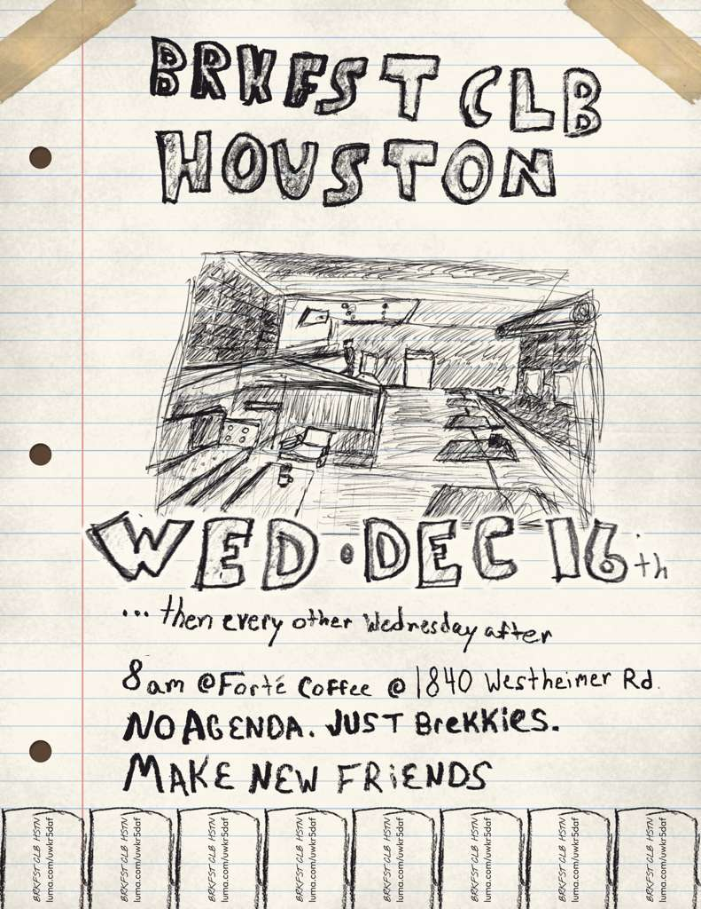
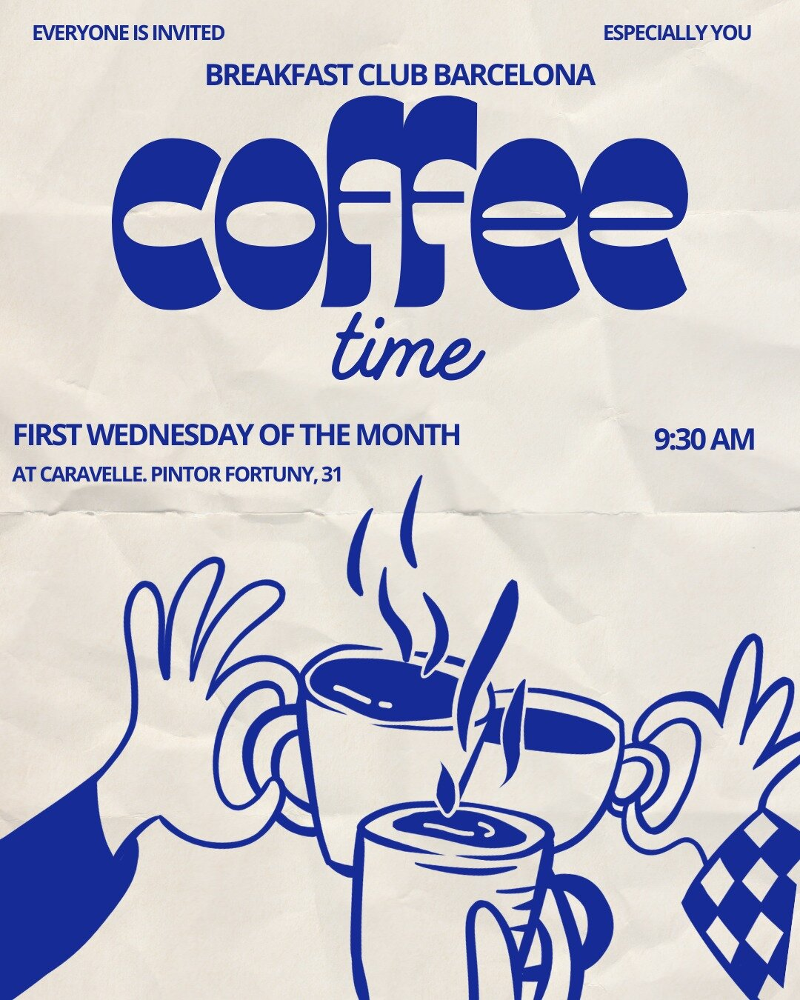
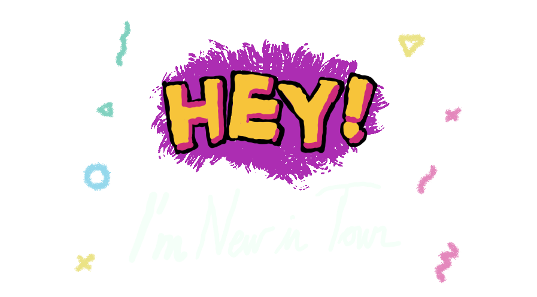
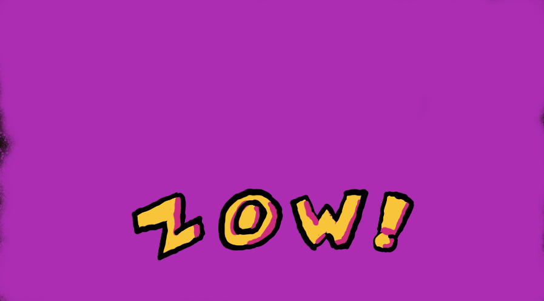

Everyone’s invited. Especially you.
Breakfast Club brings people together over coffee and conversation in cities around the world. Make new friends, wherever you are.
Find your club → ← start here, it's just breakfast
53 clubs · 18 countries · and countingThe poster wall

NewDec 16 NewJust launched
NewJust launched
 Pop-up8:00 am
Pop-up8:00 am


Real flyers, pulled live from the Vercel build. Hover one — it straightens up and lifts. The badge only appears on clubs flagged new, launching or pop-up. Houston's is the actual flyer from the host chat.
Stickers
Hard corners + 2px ink border + offset block shadow — the house square-style, not the deck's pill.
Handwriting
no agenda, no pitch deck, just breakfast
we save a seat for whoever turns up
Writes itself on when it scrolls into view. Reload to replay.
Club detail — panel treatment
Names, not profile slugs — “Lisa Ono”, not “lisaonocreate”. Maps buttons are the white ghost variant: same square and shadow as the primary, no accent, because they’re navigation rather than the call to action.
Texture — Paris croissant
Everyone’s invited.
The flyer art becomes the backdrop. Content floats over it.
Paris · Cult CaféTexture — Barcelona, cropped to the cups
Cropped to the bottom half, where the flyer is pure line art — three hands clinking cups. Framing past the type is the whole trick; at full-bleed its headline competes with yours.
Find your club →Flyer maker — three questions
1 · what stock? pick for the locale, not at random.
2 · what vibe? 3 · anything personal to add?
Club
Copenhagen
Club Paris
Everyone is welcome, especially you.
Everyone is welcome, especially you.

Torquay
Three questions, then it spits one out. “Everyone’s invited, especially you” is on every single one — split across the top corners the way Barcelona does it, and repeated at the foot the way Paris does. One element is huge and the rest is small; no middle sizes. A host’s own photo goes on taped to the flyer, not composited into it.
SHOUT — "HEY!" AND "ZOW!"

new clubLisbon
pop-upthis SaturdayMike's own lettering, cropped out of the title-card artwork rather than rebuilt in CSS — a near-miss recreation of hand-drawn type is exactly the thing that reads as generated. The two words are fixed because they were drawn; the caption beside them carries the variable half, set in the kit's type so the contrast between drawn and set stays visible.
Clubby — chat launcher
An egg with a cracked top and round specs. It reads as
chat because the egg doubles as a speech bubble — note the tail at
its bottom-left. On hover the whole egg spills out past the button edge and
the smile widens. It blinks on its own every few seconds. Shell colour is
the --bc-egg token, so a warmer tan is a one-line change.
Headline type — side by side
Everyone's invited. Especially you.
Everyone's invited. Especially you.
Everyone's invited. Especially you.
Everyone's invited. Especially you.
Light wants more size and more line-height to carry; Medium holds the current layout with almost no other change.